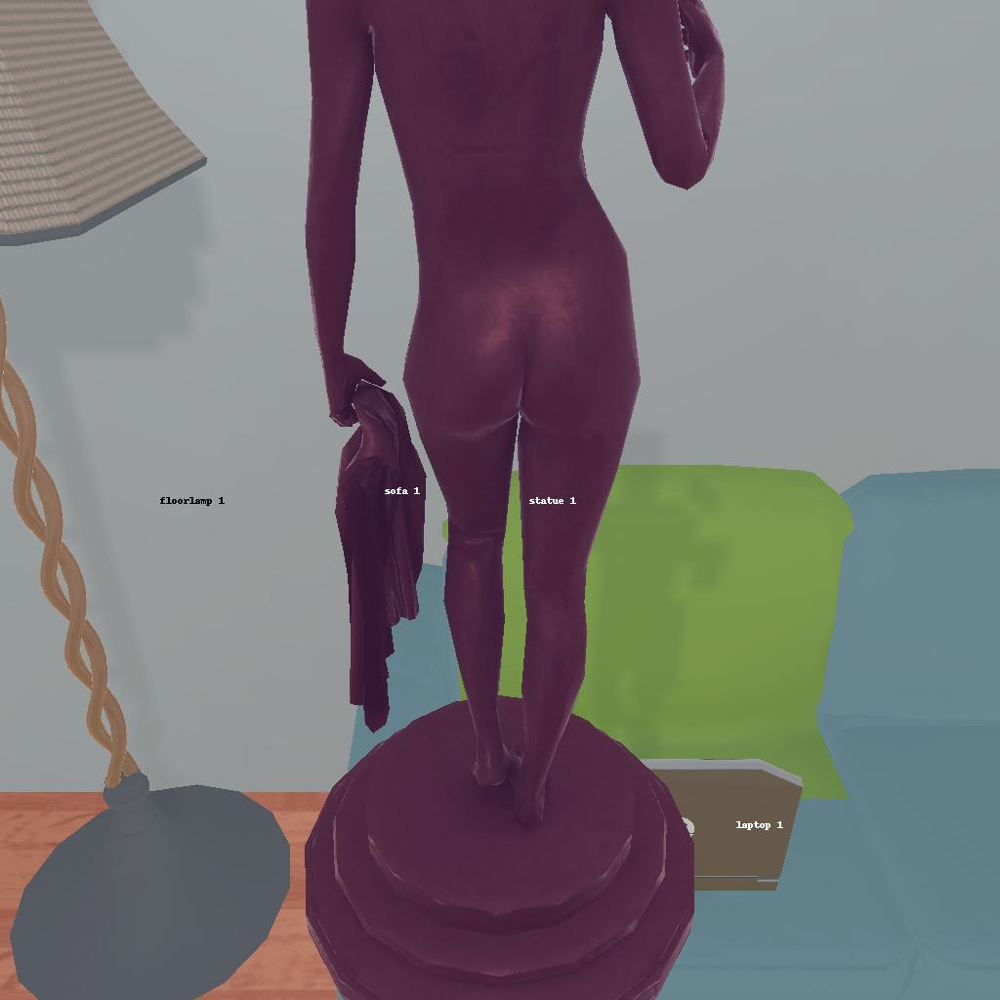
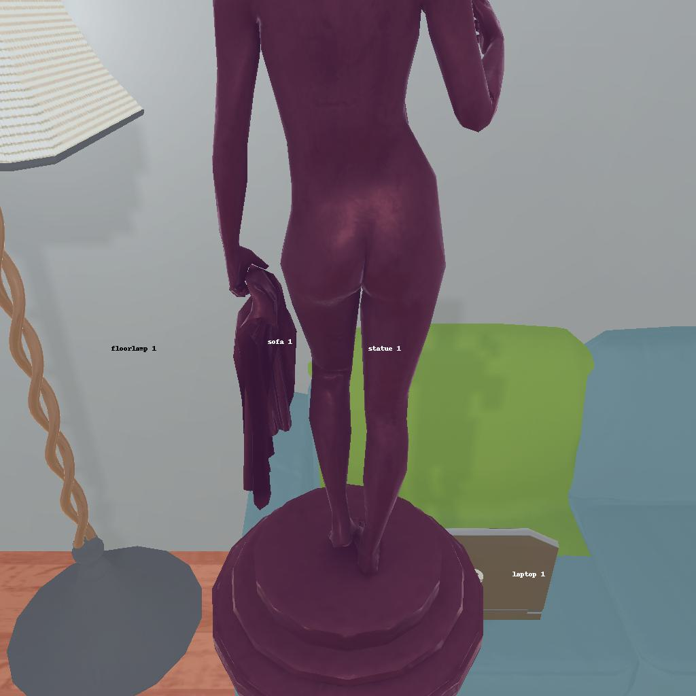

---------------------------------------------------------task: 4---------------------------------------------------------
--------------------------------------------------------------------------------------------------------------------------------------------------------------------
--------------------------------------------------------------------------------------------------------------------------------------------------------------------
Step:--------------------------------------------------------------------------9-------------------------------------------------------------------------------
----------------------------------------
VLM Prompt:
Image1:
Image2:
**Instruction**
1. Analyze the provided image to identify all visible household objects, focusing on those relevant to the task description "examine the statue with the floorlamp."
2. Use the analysis of the image and the task hint "The agent must find an object of the desired type, locate and turn on a light source with the desired object in-hand." to answer the question: what is the most reasonable action in the choices for the task description "examine the statue with the floorlamp"?
4. Decide and write the answer using the template: The answer is: (i): , where i is the real number. If there is no desired object in the image, search every place based on **Initial Observation** to find the object. And if no one is exactly correct, choose a similar answer.
**Initial Observation**
You are in the middle of a room. Looking quickly around you, you can see armchair (1), coffeetable (1-2), sidetable (1), garbagecan (1), drawer (1), sofa (1), diningtable (1)
**Answer Choices**
(1): go to armchair 1
(2): go to coffeetable 1
(3): go to sidetable 1
(4): go to garbagecan 1
(5): go to sofa 1
(6): go to coffeetable 2
(7): go to diningtable 1
(8): put statue 1 in/on sofa 1
(9): use floorlamp 1
(10): examine statue 1
(11): examine sofa 1
**Answer**
Let's think step by step by following the instructions.
----------------------------------------
----------------------------------------
Original Response:
The task description is to "examine the statue with the floorlamp." From the initial observation, we note the presence of a statue (statue 1) and a floorlamp (floorlamp 1) in the images provided. The task hint suggests that the agent must find an object of the desired type, locate and turn on a light source with the desired object in hand. In this case, the desired object is the statue, and the light source is the floorlamp.
Since the statue is already in the room and does not need to be found, the next step is to locate and turn on the floorlamp to examine the statue. The most reasonable action from the answer choices that aligns with this task is to use the floorlamp to provide light for examining the statue.
The answer is: (9): use floorlamp 1.
----------------------------------------
----------------------------------------
>>> Refine Original VLM Response and Get Pure Action: use floorlamp 1
----------------------------------------
-----------------------------------------------------------------
Running time: 7.752463102340698 seconds
Total Money: 1.92225
-----------------------------------------------------------------
-----------------------------------------------------------------
Text Observation:You turn on the floorlamp 1.
-----------------------------------------------------------------
SUCCEED